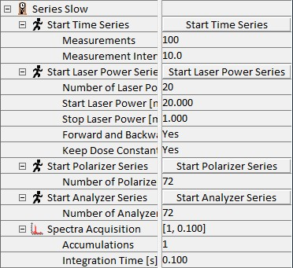
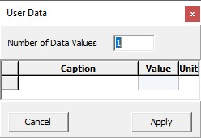
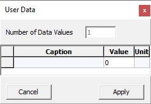

|
慢速序列
|
慢速序列允许间歇（慢速）时间序列、激光功率系列、偏振器和检偏器系列以及外部触发系列，包括记录用户数据通道。
更多信息（操作指南）：

开始时间序列
启动慢速时间序列。
测量次数
此参数确定将执行多少次测量。
测量间隔 [s]
测量间隔定义两个数据点之间的时间。
开始激光功率系列
启动激光功率系列。仅适用于 TruePower 激光器。
激光功率步数
此参数确定将执行多少次测量。
起始激光功率 [mW]
定义第一个数据点的激光功率。
停止激光功率 [mW]
定义最后一个数据点的激光功率。
正向和反向
如果选择"是"，系列将运行到停止激光功率，然后返回到起始激光功率。
保持剂量恒定
如果选择"是"，积分时间将被调整以补偿由于激光功率变化引起的光谱强度变化。积分时间参数针对最高激光功率定义，因此是最大积分时间。
开始偏振器/检偏器系列
启动偏振器/检偏器系列。仅适用于自动偏振器/检偏器。
偏振器/检偏器步数
此参数确定在激光偏振或检偏器完整旋转一周中将执行多少次测量。
光谱采集
所有类型系列的光谱采集参数。
累积次数
此参数描述将累积多少个光谱。
积分时间 [s]
此参数定义积分时间。
测量模式
此参数确定慢速时间序列使用哪种模式。
手动
每个下一个测量点由"下一个测量"按钮触发。这可用于外部或手动触发的系列。
定时
系列由测量间隔参数触发。
尽可能快
测量点随后连续处理，无暂停。
计时模式
此参数定义测量间隔是在两次开始之间测量，还是在停止和开始之间测量，这也考虑了测量本身的时间。
单次测量后的显微镜状态
定义单次测量后应使用哪种光路配置。默认情况下为空，显微镜保持在测量光路配置中。
输入 BeamPath|SetStateVideo 可在单次测量之间切换到视频模式，或输入 Laser|Selected|Shutter:SetValue:False 仅关闭激光快门。
（仅允许一个命令，不允许两个或更多命令的组合。）
用户数据通道
启用用户定义的数据通道的定义和数据输入。（当通过 COM 接口更改数据时，对话框中的值不会刷新。）
包含用户数据
如果激活，用户数据将存储在项目中。
定义数据通道
单击此按钮打开一个新窗口，用于定义用户数据通道的数量及其标题和单位。

输入用户数据
单击此按钮打开一个新窗口，用于为下一次测量的每个数据通道输入值。

子序列
子序列允许在时间序列的每次测量之前插入一个操作（如自动对焦）。
子序列器
启用于序列器的使用并确定子序列器的类型。仅可用"无"（默认）和"处理脚本"。处理脚本的参数需要在 相关部分中设置。
失败时继续
如果选择"停止"，时间序列将在子序列失败时停止，否则将继续。
子序列完成
子序列完成后变为"是"。
开始子序列
在手动测量模式下触发子序列。
下一个测量
如果选择了手动测量模式，触发下一个数据点。
下一个测量的索引
只读参数，显示后续测量的索引。